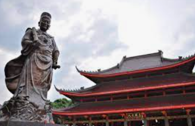

Lawang Sewu adalah gedung bersejarah milik PT Kereta Api Indonesia (Persero) yang awalnya digunakan sebagai Kantor Pusat perusahaan kereta api swasta Nederlandsch-Indische Spoorweg Maatschappij (NISM). Gedung Lawang Sewu dibangun secara bertahap di atas lahan seluas 18.232 m2.
Bangunan utama dimulai pada 27 Februari 1904 dan selesai pada Juli 1907.
Sedangkan bangunan tambahan dibangun sekitar tahun 1916 dan selesai tahun 1918.

Klenteng Sam Poo Kong
Kelenteng Sam Poo Kong merupakan bangunan bersejarah yang berfungsi sebagai tempat ibadah sekaligus wisata. Kelenteng ini didirikan untuk menghormati Laksamana Cheng Ho.
Kelenteng ini didirikan sebagai penghormatan Laksamana Cheng Ho, yakni seorang penjelajah Tiongkok yang singgah di Semarang dalam perjalanannya menyebarkan perdamaian. Laksamana Cheng Ho merupakan laksamana muslim yang diutus Kerajaan Ming dalam beberapa ekspedisi laut ke Kepulauan Selatan.
Gereja Blenduk
Gereja yang dibangun pada 1753 ini merupakan salah satu landmark di Kota Lama. Berbeda dari bangunan lain di Kota Lama yang pada umumnya memagari jalan dan tidak menonjolkan bentuk, gedung yang bergaya Neo-Klasik ini justru tampil kontras.
Lokasi bangunan ini berada di Jalan Letjend Suprapto No 32 Kota Lama Semarang dan bernama Gereja GPIB Immanuel. Gereja ini masih dipergunakan untuk peribadatan setiap hari Minggu.